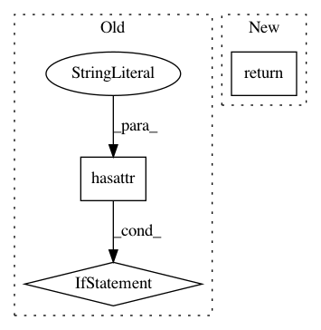

25a8973dfce5251c0bd527ffa16ce17174b94218,keras/backend/cntk_backend.py,,temporal_padding,#Any#Any#,2025
Before Change
base_shape = x.shape
if num_dynamic_axis > 0:
assert len(base_shape) == 2
if hasattr(C, "pad"):
x = C.pad(x, pattern=[padding, (0, 0)])
else:
x = _padding(x, padding, 0)
else:
assert len(base_shape) == 3
if hasattr(C, "pad"):
x = C.pad(x, pattern=[(0, 0), padding, (0, 0)])
After Change
assert len(padding) == 2
num_dynamic_axis = _get_dynamic_axis_num(x)
assert len(x.shape) == 3 - (1 if num_dynamic_axis > 0 else 0)
return pad(x, [padding], "channels_last", num_dynamic_axis)
def _padding(x, pattern, axis):
base_shape = x.shape
In pattern: SUPERPATTERN
Frequency: 4
Non-data size: 3
Instances
Project Name: keras-team/keras
Commit Name: 25a8973dfce5251c0bd527ffa16ce17174b94218
Time: 2018-05-22
Author: me@taehoonlee.com
File Name: keras/backend/cntk_backend.py
Class Name:
Method Name: temporal_padding
Project Name: deepmind/sonnet
Commit Name: 4e6f863acd500dc02e7c2a8e5a01566ac58930d9
Time: 2018-11-20
Author: noreply@google.com
File Name: sonnet/python/modules/conv_test.py
Class Name: SharedConvTest
Method Name: testCustomGetter
Project Name: OpenMined/PySyft
Commit Name: 1eb369ae3a1865789f5809bec59f066ac1cbe58d
Time: 2020-06-03
Author: kmhigley@gmail.com
File Name: syft/workers/base.py
Class Name: BaseWorker
Method Name: get_obj
Project Name: keras-team/keras
Commit Name: ee179f7da155c3cb8129b954db828906886ad4e4
Time: 2015-06-08
Author: francois.chollet@gmail.com
File Name: keras/layers/core.py
Class Name: AutoEncoder
Method Name: get_input